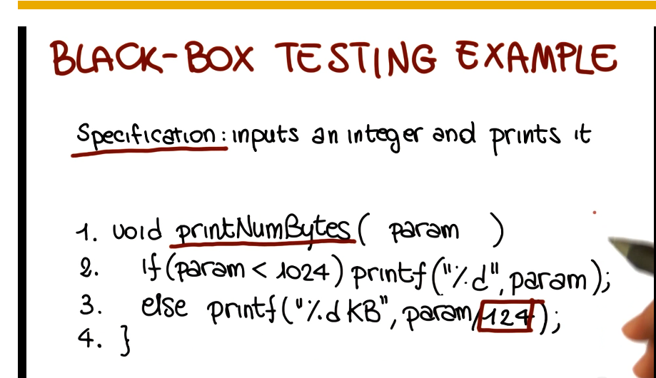
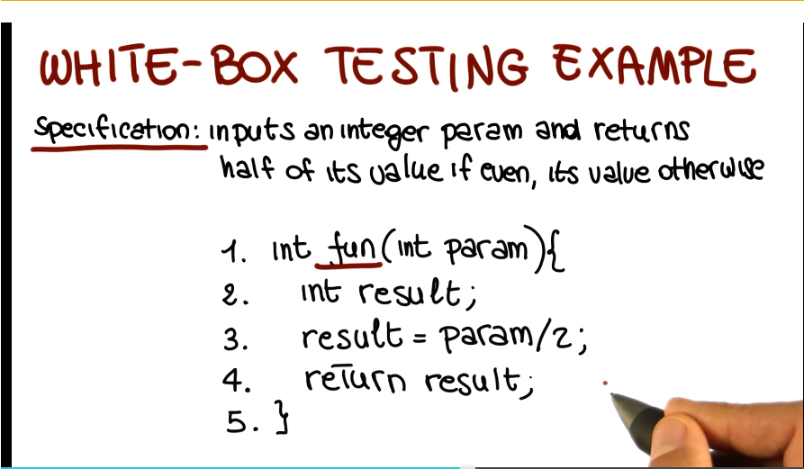
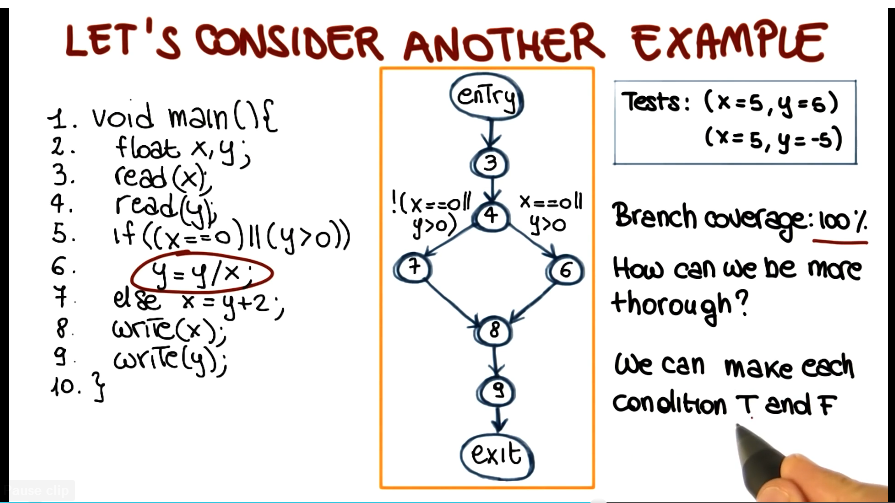
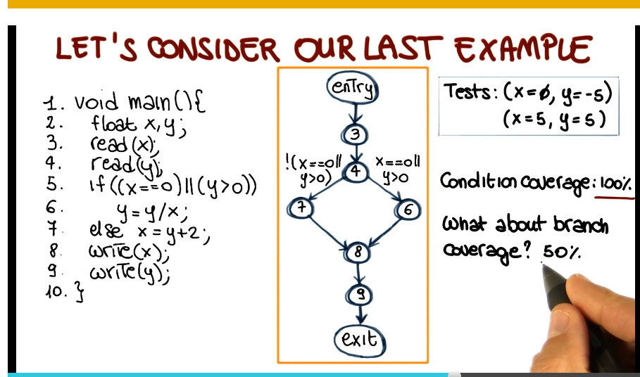
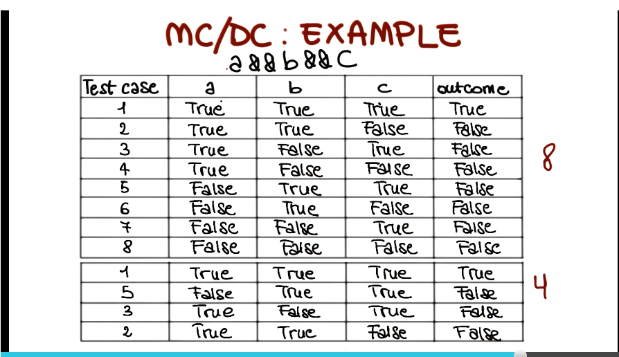
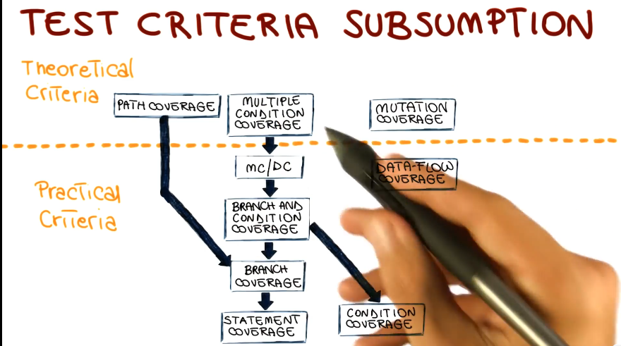

Software Dev Process Lecture Notes - Part 4 Lesson 1,2,3 - Verification and Testing
General concepts
- Software is buggy, estimated $60B per year cost
- Contains on average 1-5 bugs per 1k LoC
- solution is to verify software as much as possible. Most common kind of verification is software testing
- Failure
- Observable incorrect behavior of the software
- Fault
- aka bug
- incorrect piece of code
- necessary but not sufficient component of failure
- Error
- cause of a fault
- usually a human error
Verification Approaches
- testing put last as it has the most detail and add-on sections. other approaches briefly covered first
Static Verifications
- tries to identify specific classes of problems
- unlike testing it does not just consider individual inputs, instead considers all possible inputs
- Pros
- considers all program behaviors, is complete
- Cons
- because it includes impossible inputs, can result in false positives / false alarms
Inspections
- also called reviews or walkthroughs
- manual group activity in which several people from the org look at code and artifacts and try to identify defects
- very effective, this is a code review!
- Pros
- when done rigorously, they are systematic and thorough
- Cons
- they are manual, take a lot of time
- they are informal and subjective, rely on reviewers to see and know things
Formal proofs of correctness
- a specification is a document that formally defines behavior of the software
- a formal proof is a program that formally proves that the program being verified actually implements the specification
- Pros
- provide strongest guarantees
- Cons
- need formal specification. these are rarely available
- complex and expensive to perform, require specialized skills
Testing
- Exercising the system to try to make it fail
- a test case consists of input from input domain and an output from the output domain
- a test suite is a set of test cases
- Pros
- no false positives, no false alarms
- Cons
- highly incomplete, code coverage is always low
Introducction
- Executing a program on a tiny sample of the input domain
- Dynamic technique - program must be executed to perform
- Optimistic approximation - program under test is exercised on only subset of inputs, under assumption that behavior under other inputs will be the same as the behavior under tested inputs
- Successful Tests
- A test is successful if the program fails
- Testing cannot prove absence of errors, only reveal their existence
Testing Granularity Levels
- Unit testing - test individual modules of system to see that each does what it should
- Integration testing - test groups of modules to see that they perform together as expected
- System Testing - test all modules of system at once
- Acceptance Testing - validation of softare against customer requirements
- Regression Testing - testing performed whenever system is changed to ensure changed code does not break things
- this part in particular is automatable and should be automated
- Continuous Integration tooling sits here
Alpha and Beta Testing
- Alpha testing is performed by distributing software to internal users as guinea pigs. Done to avoid exposing substantial problems outside the organization
- Beta testing is the same, but to external users. Done preceding official product release
Black Box Testing
- Black box considers software as closed box, looking only at description of software (specification).
- Cover as much specified behavior as possible
- cannot reveal errors due to implementation detail
- Example 
- Advantages
- focus on only the appropriate input domain
- don’t need the code to do it
- allows for early design of tests
- catches logic defects
- applicable at all granularity levels (unit, integration, and system)
- Begins with functional specification, ends with test cases * should be traversed systematically with steps 1. identify independently testable features 2. identify relevant inputs * this is a harder problem than it seems, as you cannot just test all possible inputs * random input selection? why not? * uniform input selection precludes designer bias * but you’ll miss a lot just by looking in the wrong places. not efficient enough * partition testing * bugs tend to be sparse overall, but dense in specific areas. * partition the domain, select tested inputs from each partition * for example, for a string split function using a chunk size input, you might test behavior for chunk sizes <0, =0, >0. You might also test strings with lengths less than input chunk size, etc. * errors tend to occur at the boundary of a subdomain. partitioning and selecting inputs within those paritions should reflect that fact. * for example, -1, 1, MAXINT are common integer boundary values * important to remove meaningless cases when generating tests, though 3. derive test case specifications (descriptions of test cases) 4. generate test cases
- The Category-Partition Method
- Developed in 1988. Uses prescribed 6 steps for going from spec to test cases
- Identify independently testable features
- discussed above, will not be covered again here 2. Identify categories
- characteristics of each input element
- in example from above: split(string str, int size)
- two input elements, str and size
- str
- length
- content
- size
- value
- Partition categories into choices
- value
- str
- length
- 0, -1, etc…
- content
- spaces, special characters, etc…
- length
- size
- value
- 0, >0, <0, MAXINT, etc…
- Identify constraints among choices
- 0, >0, <0, MAXINT, etc…
- value
- to eliminate meaningless combinations of inputs
- to reduce the number of test cases
- three types
- properties: if, error, single
- str
- length
- 0 - property zerovalue
- content
- special characters - if !zerovalue
- length
- size
- value
- <0 - error, so test only once
- MAXINT - single, so test only once 5. Produce/evaluate test case specifications
- value
- can be automated
- produces test frames (specification of a test)
- because it is automated, if too many frames are produced additional constraints can be added and one-click regeneration will produce fewer frames 6. Generate test cases from test case specifications
- simple instantiation of test frames
- final result: set of concrete tests
- Developed in 1988. Uses prescribed 6 steps for going from spec to test cases
- Model-Based Testing
- focuses on model of the software, builds tests around that
- Example: Finite State Machine
- Nodes = states
- Edges = transitions between states
- Edge labels = events/actions
- Identify system’s boundaries, and input and output
- Identify relevant states and transitions
- Decide which states and transitions you want to develop test coverage for
- Some Considerations
- Applicability
- very general approach
- in UML, state machine are readily available
- Abstraction is key
- bigger system means you need more abstraction
- more abstraction means less coverage but also less cost
- many other approaches exist
- decision tables
- flow graphs
- historical models
- Applicability
White Box Testing
- White box looks inside the software at the code itself
- Cover as much coded behavior as possible
- Cannotg reveal errors due to missing paths (if it isn’t implemented at all then you’ll never find errors in it)
- Example 
- Basic assumption of white box testing - executing the faulty statement is a necessary condition for revealing a fault
- Advantages
- based on the code
- quality of testing can be measured objectively
- Can be used to compare test suites
- Allows for covering the coded behavior (as distinct from the specified behavior)
- based on the code
- Different kinds (many variations of each)
- control-flow based (will focus mostly on this one)
- data-flow based
- fault based
- Coverage criteria
- defined in terms of test requirements
- Result in test specifications, test cases
- Statement Coverage
- Test requirements: statements in the program
- Coverage measure: number of executed statements / total number of statements
- Most used coverage metric in industry
- Typical coverage target in industry is 80-90%
- Control Flow Graphs
- Important to recognize implicit branches, “else do nothing” is frequently not typed out but still is present, for example
- Tool for visually depicting control flow branches of a program
- Branch Coverage
- Test requirements: branches in the program
- Coverage measure: number of branches executed / total number of branches
- considers all branches even if not explicitly stated in code
- even 100% coverage does not guarantee all bugs will be found
- Test Criteria Subsumption
- 100% branch coverage by definition means 100% statement coverage, but the inverse does not hold true
- branch coverage is therefore stronger than statement coverage, but also correspondingly more expensive
- Condition Coverage

- Test requirements: individual conditions in the program
- condition here takes the form of True or False
- distinction arises in screenshot above, where two conditions gate the same branch in an OR configuration, and branch coverage does not require that you exercise both of them. this is relevant for white box testing assignment’
- condition here takes the form of True or False
- Coverage measure: number of conditions that are both T and F / total number of conditions
- thus a complete test suite would test all conditions gating all branches
- however, this does not guarantee branch coverage, they are orthogonal to each other 
- Test requirements: individual conditions in the program
- Branch and Condition Coverage
- Test requirements: branches and individual conditions in the program
- Coverage measure: computed considering both branch and conditional coverage measures
-
Modified Condition/Decision Coverage (MC DC) - key idea: test important combinations of conditions instead of all of them to limit testing costs
- extends branch and decision coverage witgh the requirement that each condition should affect the decision outcome independently 
- stronger than branch and condition coverage, therefore subsumes all of them, despite offering capability of reducing number of test cases as seen in above screenshot
- Other Criteria
- Path coverage
- Test requirement: all paths in program
- very expensive
- Test requirement: all paths in program
- data-flow coverage
- shifts emphasis from statements to pairs of statements, and particularly statements where memory objects are modified
- mutation coverage
- new idea
- evaluate goodness of our tests by modifying our code, see how good tests are at distinguishing between real code and mutants
- this one has grown legs, would be good to study more
- Path coverage
-
Subsumption Redux 
- White Box Summary
- Works on a formal model. No subjective interpretation needed, everything about it can be quantified
- As a result of point 1, this means you can objectively compare test suites to see how they perform
- There are two broad classes of tests criteria: practical and theoretical
- Note, mutation testing is called theoretical here. Excellent lesson on how ‘practical’ things can get with a few years of advancement
- Fully automatable
- write the tests once at most, run whenever you push a branch!